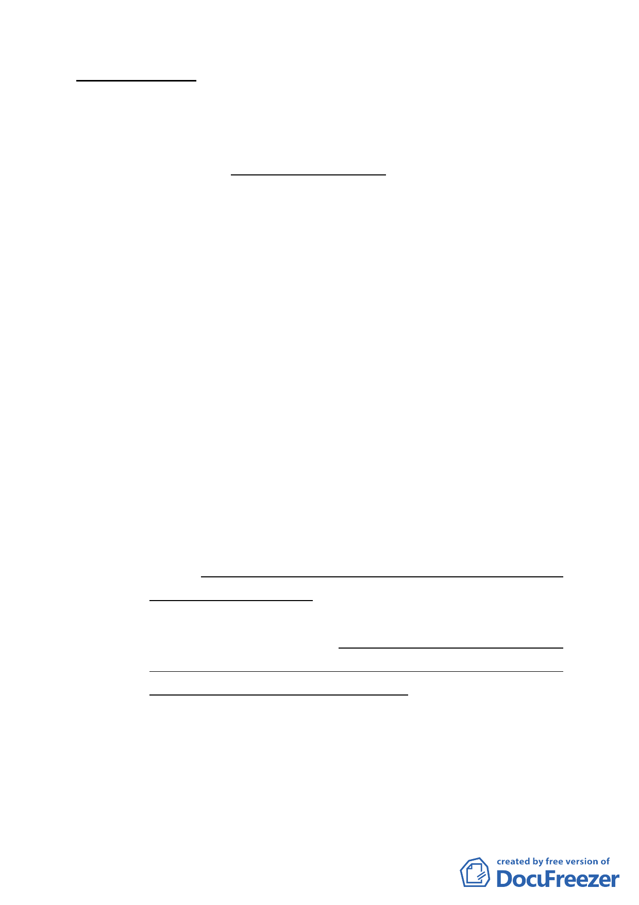

案情概要說明：
一、本案基地位於基隆河（中山橋至成美橋段）大彎北段地區，
街廓編號 B2 基地中山區金泰段 16-4 地號娛樂區（供娛樂購
物中心使用），計畫面積 6625.38 平方公尺。本計畫原使用
分區為娛樂區（供娛樂購物中心使用），建蔽率 60％、容
積率 250％，所有權人為興富發建設股份有限公司、何仕俊
及蔡裕隆等 3 人。
二、變更計畫緣起與目的：
興富發建設股份有限公司、海鉅建設股份有限公司依循臺北
市「徵求參與『促進都市再生 2010 年臺北好好看』開發計畫
案」之精神，擬融合具有主題性的廣場式開放空間，利用大
樓一、二、三層樓商店街規劃來延續整區商業活動，形塑國
際化的都市空間文化意涵。前經提 97 年 11 月 11 日臺北市政
府「徵求參與『促進都市再生 2010 年臺北好好看』開發計畫
案」審查委員會審查同意推薦，爰依都市計畫法第 24 條研提
本修訂計畫案。
三、公展計畫內容概述：
（一）土地使用分區管制：
1、土地及建築物之使用項目
（1）本地區街廓編號B2娛樂區（供娛樂購物中心使用）（中
山區金泰段16-4地號），以購物商業、休閒娛樂之使用
為主，建築物低層部(地面層第一至第三層)應作計畫書
附表1指定之使用項目，其餘樓層得比照臺北市土地使用
分區管制規則第三種商業區之規定辦理。
（2）惟依本計畫開發許可條件申請放寬作住宅使用之容積樓
地板面積不得超過申請基地容積樓地板面積（不含臺北
好好看獎勵容積）之二分之一以上。建築物非供住宅使
用之樓層，其同層及以下各樓層應均非供住宅使用。
（3）為配合科技產業軸帶之發展，申請台北好好看所增加之
各項獎勵容積樓地板面積應第三種商業區允許使用項目
（不准許做住宅使用），且不得計入前項土地及建築物
之使用規定有關商業使用容積樓地板面積之計算。
2、土地使用強度：
- 23 -